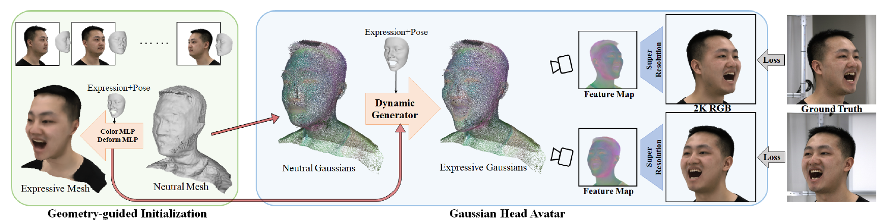
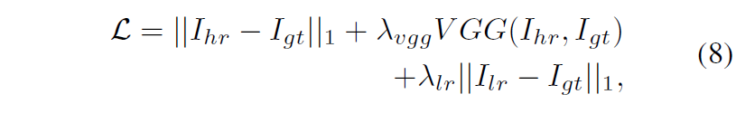
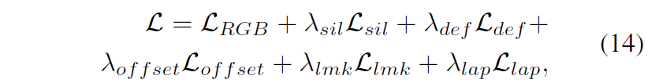
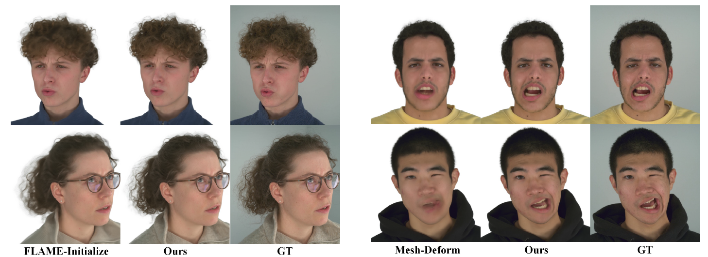

Gaussian Head Avatar: Ultra High-fidelity Head Avatar via Dynamic Gaussians
摘要
任务：由稀疏视角创建高保真三维头像（3D head avatars）。
本文提出了由可控的3D Gaussians表示的头像建模方法，Gaussian Head Avatar，优化neutral 3D Gaussians和基于MLP的形变场（MLP-based deformation field），以捕捉复杂的面部表情。这两个部分相辅相成，可以在确保表情准确性的同时建模细粒度的动态细节。此外，本文设计了一种基于隐式SDF和Deep Marching Tetrahedra的几何引导初始化策略，以确保训练过程的稳定性和收敛性。
结果：能达到2K分辨率的渲染质量，而且能很好地handle夸张表情。
简介
在稀疏视角这种lightweight setting下，重建3D头像最大的挑战是缺乏精确的几何。基于NeRF的方法可以被用于稀疏视角的头像重建，但是无法达到2K的分辨率，缺乏像素级的细节，包括皱纹、眼睛等。
3D Gaussian splatting在静态/动态场景下的渲染质量很高，而且速度很快。然而，用3D Gaussians建模动态场景的工作都不可动画化。对于建模可动画化头像来说，需要关注的是如何有效地控制3D Gaussians的形变，并通过表情系数建模动态外观。
之前，人脸形变一般利用linear blend skinning (LBS)的蒙皮权重和blendshapes，就像FLAME model那样。问题在于LBS-based方法无法用简单的线性操作表现出夸张的、细粒度的表情。受NeRSemble启发，本文提出了一种完全学习的expression-conditioned deformation field，输入3D Gaussians的位置和表情系数，MLP预测从中性表情到目标表情的位移。类似地，也可以用head pose控制非面部区域（比如脖子）的运动。
3D Gaussians是一种离散的显式表示，离散性使得梯度反向传播时无法传递到整个空间中，所以训练的收敛很大程度上依赖于geometry和deformation field合理的初始化。随之而来的问题是，用FLAME之类的可变形模板进行初始化无法建模长发和肩膀。于是本文提出了一种几何引导的初始化策略，先优化一个隐式SDF场，颜色场以及deformation MLP，对应建立基本的几何、颜色和表情相关的形变。
方法

这是一个2-stage pipeline。
数据预处理：把数据集中每张图片的背景去除，联合估计3DMM model，3D facial landmarks和每一帧的表情系数。
Gaussian Head Avatar
为了容易理解，论文先介绍了训练的第二阶段。
首先要建立一个canonical neutral Gaussian model，包含和表情无关的属性，$\{X_0,F_0,Q_0,S_0,A_0\}$，分别代表Gaussians的坐标，特征向量（dimension=128），neutral rotation, scale, opacity。然后，通过dynamic generator $\Phi$将neutral Gaussians形变，生成目标表情。
其中$\theta, \beta$分别表示表情系数和头的姿态（head pose）。dynamic generator内部的具体做法简单来讲分成以下三部分
- Gaussians坐标：两个预测位移的MLP，分别受表情和head pose控制，然后对两个MLP的输出加权平均，离landmarks近的Gaussian受表情系数的影响大，反之则受head pose的影响大。
- 颜色：也用两个MLP来预测，并加权平均；和上面提到的坐标不同的是不需要预定义的neutral color。
- rotation, scale, opacity：同样用两个MLP来预测与neutral value的偏移量，并加权平均；还要进行平移和旋转操作，从canonical space变换到world space。
最后，在给定的相机视角下，将Gaussians渲染成32个通道的512*512特征图，然后将其输入超分辨率网络以生成2K分辨率的图像。整个模型在多视角RGB视频的监督下进行优化，损失函数如下：

其中$I_{lr}$是32通道的特征图的前三个通道。
初始化
第一阶段需要优化一个guidance model，包括neutral mesh, deformation MLP和color MLP。
SDF场通过Deep Marching Tetrahedra (DMTet) 转化成mesh，而顶点的颜色和形变通过MLP进行预测。然后对mesh渲染RGB图像和mask，在多视角RGB图像的监督下优化网络参数。另外还用到landmarks作为监督信号，训练表情形变MLP。此外还有一些惩罚项。总的损失函数如下：

最后，用SDF场提取出的mesh初始化3D Gaussians的顶点位置和特征向量，其中特征向量在下一个阶段被用于预测点的颜色。color MLP和deformation MLP在第二阶段用来确保训练的稳定和收敛。整个初始化过程需要10分钟左右。
实验
主要看了一下消融：
- 初始化策略：相比直接用FLAME初始化，本文提出的几何引导初始化对离头比较远的发丝的重建效果比较好。
- 形变策略：相比用LBS，本文提出的fully learned形变在夸张表情的setting下效果更好。
